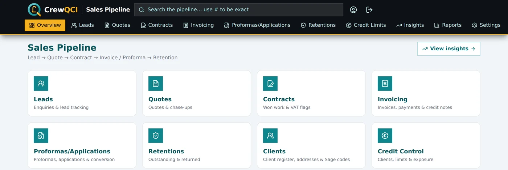
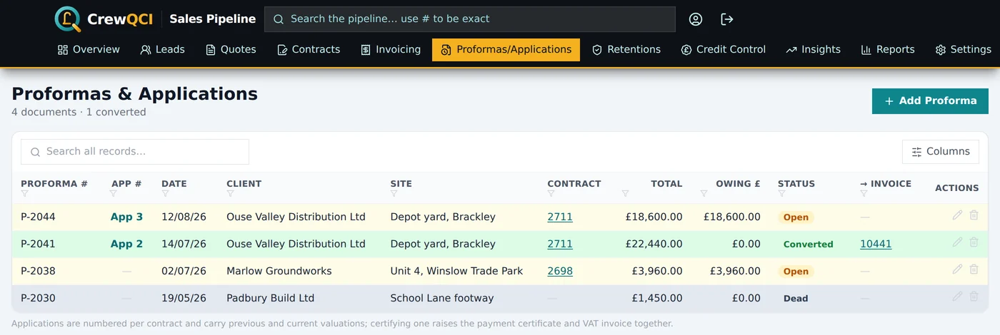
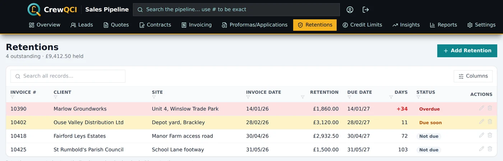
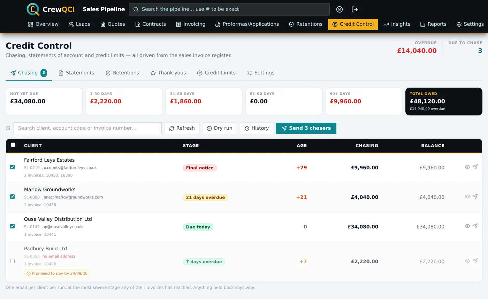
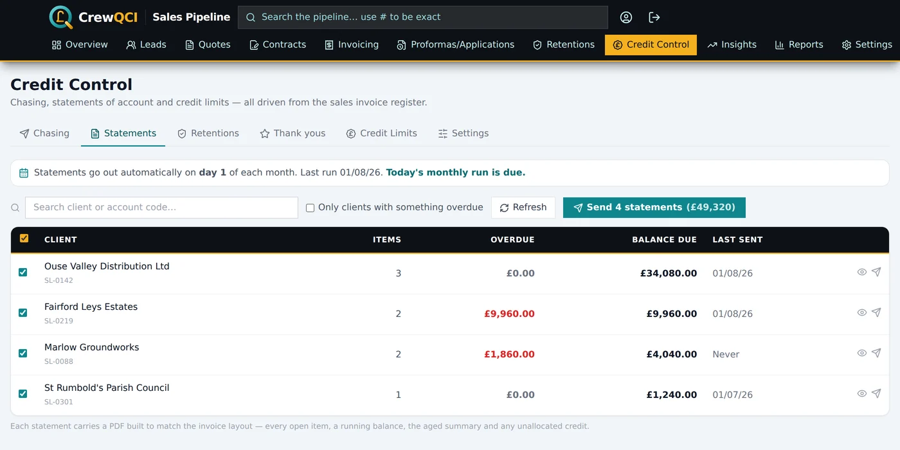
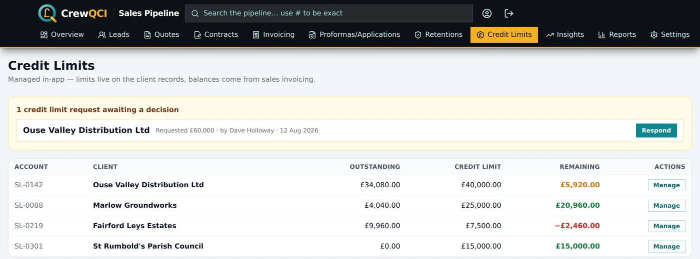
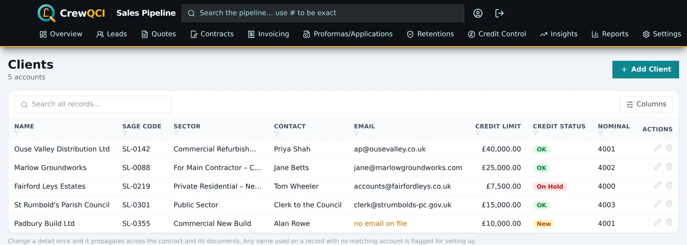
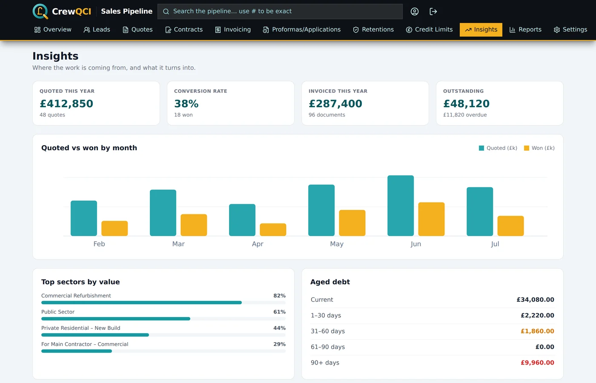

What CrewQCI is#
CrewQCI runs the commercial side of a construction or trade business from first enquiry to cleared payment. One chain of records carries the whole story: a lead (an enquiry) becomes a quote (a price), a won quote becomes a contract (the job), and against the contract you raise invoices, credit notes, proformas and applications for payment as branded PDFs. From there, credit control chases the money for you — reminders, chasers, statements and retention requests, on a ladder you set.
Because it's one chain, nothing is retyped: details entered on the lead flow to the quote, the contract and every document, and a correction made once is pushed everywhere. Everyone in your company works from the same registers at the same time — two people can be in it at once without overwriting each other.
{kind=link}

Creating your account and signing in#
Everyone gets their own personal login. There are two ways in: Continue with Google (one step, no password to remember) or an email address and password.
Registering with an email address#
- Go to crew-qci.com and click Start Free Trial, then Create one on the sign-in page.
- Enter your Email, Password and Confirm Password, then click Create account.
- On the Verify your email screen, type the 6-digit code from the email you've been sent. Didn't get it? Click Resend — and check your spam folder.
- Click Verify — you're signed in and taken into the app.
Signing in and out#
Open the app while signed out and the Welcome back page appears: use Continue with Google, or your email and password. To sign out, click the log-out icon at the top right of the header, or open the Account page (the round person icon) and click Logout.
Forgotten your password?#
- On the sign-in page, click Forgot password?.
- Enter your Email address and click Send reset link, then check your inbox.
- Open the link, fill in New Password and Confirm Password, and click Reset password. Sign in with the new password.
If something's not right#
"Invalid email or password" when logging in
Re-type both carefully, or click Forgot password? to set a new one. If you originally registered with Google, use Continue with Google instead — there's no password on the account.
"Invalid verification code" when registering
The code was mistyped, or an older code was entered after a new one was requested.
Use the code from the most recent email, or click Resend for a fresh one.
No password-reset email arrives
The page shows the same confirmation whether or not the address has an account (for security) — so a typo, a Google-only account or a spam filter all look the same.
Check spam, confirm you typed the address you registered with, and remember Google sign-ins don't have a CrewQCI password.
"Invalid reset link" or "Failed to reset password"
The link was cut short by email software, has expired, or was already used.
Click Request a new link and use the fresh email — copy the whole link into the address bar if clicking doesn't work.
"Access Restricted — you are not registered to use this application"
The login you're using isn't registered for the app.
Check you're signed in with the right account (work vs personal Google accounts are the usual culprit), try logging out and back in, or contact your administrator for access.
Your company, the trial and subscribing#
Every login belongs to one company workspace, and all your registers are private to your company. The first person from a business creates the company; everyone else joins it by invite. Creating a company also starts the whole team's card-free 14-day trial, and makes you the company Owner with full access.
Creating the company (first person only)#
- Sign in for the first time — the Create your company page appears automatically.
- Type your business name in Company name and click Create company.
- You're in, and the 14-day trial has started for your whole team — no card details taken.
- Head to Settings and fill in your company details, so they print on your documents from day one.
When the trial ends#
When neither the trial nor a subscription is active, the app shows the subscription page until someone on the team subscribes. One subscription covers the whole company — £55/month or £550/year (two months free), unlimited users.
- On the subscription page, click the Monthly or Annual plan box, then Start free trial.
- Complete the secure checkout page you're redirected to.
- You return to a confirmation — "Confirming your payment…", then "You're all set". Click Go to the pipeline. As soon as one person's payment confirms, the whole team is let in.
If something's not right#
You were invited, but you see "Create your company"
No pending invite was found for the email you signed in with — it may have been sent to a different address, or not sent yet.
Don't create a company. Confirm with your administrator exactly which email was invited, and sign in with that address. Invites are matched on the email address, so the two must match.
"You already belong to a company"
Your login is already attached to a workspace.
Sign out and back in — you should land in your existing company.
The page stays on "Confirming your payment…"
Payment confirmation can lag a little behind the redirect; the page keeps checking for about 45 seconds.
As the page itself says, you can safely leave — the subscription finishes setting up either way. Sign in again a few minutes later; if you're still shown the subscription page, email Peter.
The team keeps seeing the subscription page after paying
No active subscription or live trial is being found for the company.
Ask whoever paid to confirm they reached "You're all set". If they did, sign out and back in; if it persists, email Peter.
Your team and who sees what#
Colleagues are added by invitation, so everyone shares the same registers. An invite carries the access the person will get — their access tier and, optionally, a custom list of pages. The invited person simply registers (or signs in) with the invited email address and lands straight in the company.
| Access tier | What they see |
|---|---|
| Super Admin | Everything. Given automatically to the person who created the company. |
| Admin | Everything, including the money pages — credit control, aged debt, reports and insights. |
| Sales | The pipeline without company-wide money figures: Overview, Leads, Quotes, Contracts, Proformas & Applications, Clients, Search and Account. |
| Viewer | Looking, not running: Overview, Leads, Quotes, Contracts, Search and Account. |
Separately from the tier, a user can be an admin — able to manage users and settings, and the only ones who can send invites. Your own tier is shown on the Account page under Access tier.
Installing CrewQCI on your phone or desktop#
CrewQCI installs straight from the browser — no app store needed — and then works like a normal app from your home screen or taskbar.
- Click Install App — on the website, or on the Account page's Install CrewQCI card.
- Accept the browser's prompt.
- On iPhone or iPad, use Safari instead: tap the Share icon, then Add to Home Screen.
- No prompt? In Chrome or Edge it's under Menu → Install CrewQCI; in Safari, File → Add to Home Screen.
Installing changes nothing about your account or data — it's the same app, just quicker to reach.
Finding your way around#
The quickest route to help is always the ? button in the app's header: it opens this guide in a new tab, at the chapter for the page you're on.
After signing in you land on the Sales Pipeline overview — the flow "Lead → Quote → Contract → Invoice / Proforma → Retention" with a tile for every area: Leads, Quotes, Contracts, Invoicing, Proformas/Applications, Retentions, Clients, Credit Control, Settings and Reports, plus a View insights button for the charts. Which tiles work for you depends on your access tier.
The bar under the header carries the pages you work in all day: Overview, Leads, Quotes, Contracts, Invoicing, Proformas/Applications, Retentions, Credit Control, Prospecting and Insights. On a phone the same bar sits along the bottom of the screen. Two pages sit outside it:
- Settings — the ⚙ cog in the header, to the left of the ? button. It's on every page, including on a phone.
- Reports — open Insights and click Reports & exports at the top right. Insights is the at-a-glance picture; Reports is where a figure gets filtered, printed and sent. Both are also tiles on the Overview.
Search: one box for everything#
The header search box — "Search the pipeline… use # to be exact" — finds leads, quotes, contracts, invoices, proformas, retentions and client accounts from one place. Press Enter for the results page, split into Pipeline references and Client accounts; click any result to jump straight to the record on its own page.
- An ordinary search matches anywhere: reference numbers, client names, sites, sectors, contacts, emails, notes and feedback.
- Prefix with # (e.g. #6532) for an exact reference search — it matches the whole number only, so #653 will not return 6532.
- Searching a contract number also surfaces the quote it came from. Draft documents are excluded until issued.
Working the registers#
Leads, Quotes, Contracts, Invoicing and Proformas all share the same spreadsheet-style table, so one set of habits works everywhere.
- Search — type in the search box above the table. On the bigger registers the first search quietly fetches the complete history ("Loading all records…"), so results cover everything, not just recent rows.
- Filter — click any column header to filter its values, Excel-style: tick the values to show, or Show all to clear. Active filters appear as gold chips above the table; click a chip to remove it, or Clear all filters. Date columns filter by UK financial year (e.g. "FY 2025/26").
- Columns — the Columns button switches columns on and off (several, like Phone, Email and Chase-ups, start hidden). Your choice is remembered per table on this device.
- Row actions — the icons at the right of each row (hover to see what each does). On a phone they collapse into a single ⋮ button that opens a sheet of larger buttons.
- Long lists — tables render 200 rows at a time; the footer offers Show more and Show all.
Leads#
The Leads page is your register of incoming enquiries: who asked, what for, where, who's handling it, and what happened to it. Nothing here is a price yet — a lead becomes a quote with one click, and from then on its status advances by itself as the deal progresses.
Adding a lead#
- Open Leads and click Add Lead (top right).
- Fill in Customer name — the only required field. You can pick an existing client or type a new name. The Save button stays greyed out until there's a name.
- Add anything else you know: Date received, contact details, Job location, Subject, Lead source, Assigned to, Estimated value (£) and Notes.
- Click Save — you'll see "Lead added."
Converting a lead to a quote#
- Click the arrow icon on the lead's row (tooltip Convert to quote), or open the lead and click Convert to quote.
- You land on the Quotes page with the Add quote dialog open and pre-filled from the lead — client, site, source, salesperson, value and contacts — with today's date and the next quote number already allocated.
- Adjust anything, then click Save. Nothing is created until you save — closing the dialog abandons the conversion harmlessly.
- On save, the lead links to the new quote and its status moves to Quoted by itself.
Once a lead has a quote, the same row button reads Go to quote — and the Quote # and Contract # (won) columns are clickable links straight to those records. When a contract is eventually raised from the quote, the lead marks itself Won and the contract number is stamped onto it.
Lead statuses and row colours#
| Status | Row colour | Meaning |
|---|---|---|
| New | White | Just arrived — nobody has priced it yet |
| Quoted | Light teal | A quote has gone out (set automatically on conversion) |
| Emailed / Called Follow Up | Amber | Chased, waiting on the client |
| Won | Green | A contract has been raised (set automatically) |
| Lost | Red | Went elsewhere |
| Not Our Service / Not Our Area | Pale amber | Declined — wrong kind of work or too far away |
| Dead | Grey | Gone quiet for good |
If something's not right#
The Save button is greyed out in the lead dialog
Customer name is empty — it's the only required field.
Type or pick a customer name and Save enables immediately.
"Failed to add lead." / "Failed to save." / "Failed to delete."
The save or delete couldn't reach the server.
Check your internet connection and try again. If it keeps happening, contact your administrator.
The table says "No leads yet" but leads exist
Your search text or a column filter is excluding everything.
Clear the search box, and click Clear all filters if any gold filter chips are showing above the table.
Amber banner: "Couldn't load leads…"
First-time setup: the leads data table isn't published in the app's back end yet.
This only appears on a brand-new installation — ask whoever set up the app (or email Peter) to publish it, then reload the page.
Quotes#
The quote register holds every price you've given: who quoted it, what it's worth, where it stands, and a log of every chase. The whole register is colour-coded by status, so anything gone cold is visible from across the office.

Adding a quote#
- Click Add Quote (top right). The dialog opens with today's date, and Quote number briefly shows "Allocating…" while the next number in sequence is fetched. It fills in by itself — or you can overtype your own number at any time.
- Complete the required fields (marked *): Quote number, Client, Sector, Lead source, Quoted by, Status and Value (£) — the value must be greater than zero. Picking the client from the list links the quote to that account rather than just copying the name, which is what lets the lifetime figures on Insights follow the client.
- If the client is already on file and you have worked for them before, Lead source fills in as Existing Customer by itself, with a small line beneath saying where they originally came from — "Originally acquired via Google, 2021". Overtype it whenever this particular enquiry came from somewhere else; typing your own choice stops it being changed again.
- Optionally add Site, contact details and Feedback.
- Click Save. If anything required is missing, the dialog footer lists it ("Required: …") and the save is refused with "Please complete: …" naming exactly what's needed.
Recording chase-ups#
- Open the quote (click its row) to see Edit quote.
- In the Follow-ups / chase-ups section at the bottom, fill in the date, By (who chased) and Outcome, then click + to add it to the log.
- Click Save. The Chase-ups column (switch it on under Columns) shows the count per quote.
Turning a won quote into a contract#
- Open the quote and click Create contract (bottom left of the dialog).
- The Contracts page opens with Add contract pre-filled from the quote — client, site, sector, source, salesperson, value, contacts — and the next contract number allocated.
- Click Save. Any lead carrying this quote number moves itself to Won and is stamped with the new contract number.
Quote statuses#
| Status | Chip | When to use it |
|---|---|---|
| Quoted | Indigo | The price has gone out; row tinted light teal |
| Emailed Follow Up | Amber | Chased by email; row tinted amber |
| Called Follow Up | Amber | Chased by phone; row tinted amber |
| Won | Green | The job's yours — create the contract |
| Lost | Red | Went to someone else |
| Not Our Service / Not Our Area | Grey | Declined to quote properly |
| Dead | Dark grey | No answer, ever |
The status list itself is yours to change under Settings → Quote Statuses. A brand-new quote saved without picking a status shows a neutral grey "Issued" chip — pick one of the listed statuses to get the proper colour.
If something's not right#
"Please complete: …" when saving a quote
A required field is blank, or Value (£) isn't greater than zero.
The message lists exactly what's missing — fill in each named field and save again.
The quote number shows "Allocating…" and stays empty
The automatic numbering couldn't fetch the next number (usually a connection blip).
Just type the number yourself — the field accepts manual entry at any time, and the sequence picks up from whatever you enter.
Only one quote is showing
You followed a link from another page, so the register is focused on that one record — there's a banner reading "Showing quote #…".
Click Clear filter in the banner to see the full register.
"Failed to save quote." / "Failed to delete."
The server request failed.
Check your connection and try again; if it persists, contact your administrator.
Contracts#
A contract is one confirmed piece of work for one client at one site. It's the record everything else hangs off: invoices, proformas and credit notes are raised against it, and its client, site and contact details are the master copy shared across every related record.
Adding a contract#
- Click Add Contract — or better, open the won quote and click Create contract so everything is pre-filled.
- Contract number shows "Allocating…" then fills with the next number in sequence. You can overtype it.
- Pick the Quote number if the work was quoted — Contract value (£) auto-fills from the quote's value. A figure you type yourself is never overwritten by the auto-fill.
- Complete client, site, sector, source and contact fields, and tick VAT zero-rated and VAT form returned if they apply.
- Click Save.
Raising documents and seeing what's billed#
Open any contract and use the buttons at the bottom left — Invoice, Proforma or Credit note — to start a new document pre-filled from the contract. The Documents raised panel in the same dialog lists everything already billed, newest first, each with a status badge (grey Draft, red Not Paid, orange Part Paid, green Paid, purple Credit); click a line to jump straight to that document.
One correction, everywhere#
Fix a client name, site or phone number on the contract and save — the correction is pushed to the contract's quote, its invoices and proformas, the originating lead and the job diary. A toast confirms it: "Details updated on N other records for this contract." Enter details once, correct them once.
VAT zero-rated jobs#
Tick VAT zero-rated on jobs that qualify for zero rating. Until you also tick VAT form returned, the contract's row is highlighted amber and the VAT form column shows a Pending badge — a standing reminder to chase the client's certificate. Once returned, the badge flips and the highlight clears.
If something's not right#
A contract row is highlighted amber
The contract is VAT zero-rated and the client's VAT form hasn't been recorded as returned.
Chase the client for the form, then open the contract and tick VAT form returned.
The contract value keeps showing the quote's figure
The value auto-fills from the linked quote whenever the field is empty.
Type your own figure over it — a manually entered value is never overwritten.
Save is greyed out in the contract dialog
Contract number is still blank.
Wait a moment for the automatic number to land, or type one yourself.
Prospecting#
Prospecting is a call list that builds itself. Any client you've invoiced before but haven't worked for within your prospecting period (six months, unless you change it) appears automatically, biggest spenders first. Ring them, log the call, and when a contract is raised they drop off the list on their own — nothing to tidy up.
Working the list#
- Read the four boxes across the top: Prospects, Past work (total historic £), Due a call and Never contacted.
- Narrow the list with the filter buttons — All, Due a call, Never contacted, Quoted in period, New prospects — or the search box.
- Read the cards by colour: white means nobody has rung them yet; amber means contact made and in hand; rose means a follow-up is now due; green means they're back on the books.
- Click Log contact after each call (next section), and Quotes / contracts / invoices to see a prospect's full history before you dial.
Logging a call#
- Click Log contact on the prospect's card.
- Fill in the Date (defaults to today), How (Call, Email, Visit, Letter, WhatsApp or Other), Spoke to, Outcome and Status now.
- Leave Follow up on at its default of two weeks ahead — or clear it if no follow-up is needed.
- Click Save contact. When the follow-up date arrives, the card gains a rose Due badge and jumps to the top of the list.
Brand-new companies (not past clients) are added with New prospect — they carry a gold New badge and always show on the list. Remove takes a prospect off the list without deleting anything — it stays on file and can come back.
The Monday-morning email#
Optionally, CrewQCI emails a "Top prospects this week" digest every Monday: follow-ups promised for the week (overdue ones flagged red) plus the best-value clients nobody has rung. Set it up under Settings → Prospecting:
- Set the Prospecting period (months) — not worked for in this long means due a call — plus Ignore below (£ historic work) and Top prospects in the email.
- Turn on Send Monday email and fill in Email goes to (no address here means no email is sent) and optionally Copied to.
- Click Test to send yourself a sample, then Save changes.
If something's not right#
No Monday email arrives
Either Send Monday email is off, Email goes to is blank, or there was nothing to chase that week — an empty email is never sent.
In Settings → Prospecting, switch the email on, fill in the recipient, click Save changes, then use Test to confirm delivery.
The Test button reports "Forbidden"
Sending the test digest is admin-only.
Ask an Admin or Super Admin to press it, or have your own tier raised.
"Allow pop-ups to print the call sheet"
The printable call sheet opens in a new window and your browser blocked it.
Allow pop-ups for this site in your browser settings, then choose Print call sheet again.
"Showing the top 200 of N dormant clients"
More dormant clients qualify than the page shows.
Raise the Ignore below figure in Settings → Prospecting to focus the list on clients worth the call.
Invoicing#
The Sales Invoicing page is one register of every issued invoice and credit note: what's been paid, what's owing, what's overdue, and what's gone to Sage. Payments, credit notes, retention posting and the Sage export all start from here.

Reading the register#
| Row / chip | Colour | Meaning |
|---|---|---|
| Not Paid | Pale yellow row, red chip | Nothing received yet |
| Overdue | Red row | Unpaid and past its due date |
| Part Paid | Pink row, orange chip | Something received, balance still owing |
| Paid | Green row | Payments, discount and retention together cover the total |
| Credit | Purple row | A credit note (shown with a CR prefix) |
The status works itself out from the figures — you never set it by hand. Owing is the total minus payments, discount and retention. The Due Date comes from the invoice date and the Terms: "On Rec" means 3 days after the invoice date; "30 Days" (or any "N Days") means N days after the end of the invoice month. Reverse-charge documents show Rev Chg in gold under the VAT figure, and the In Sage column gains a tick once a document has been through a Sage export.
Filter with the buttons above the table — All, Unpaid / Part Paid, Overdue — or tick Not yet exported to Sage. The row icons, left to right: view/print the document, record a payment, raise a credit note, post the retention (shield), edit, delete.
Raising an invoice#
- Click New Invoice (top right). The invoice number fills in automatically — or type your own. A typed number is refused at save if it's already in use; the suggested one is re-checked at save so two people can never get the same number.
- Pick the Client and check the address block and contact details it fills in. The address here is the printed "Bill To" — anything you edit is saved back to the client record too. Picking a CIS-registered client ticks Reverse charge (CIS) for you.
- Fill in Site, Contract no., Terms (they set the due date) and any Order no. (client PO).
- Either type the Net (£), or click Add line and enter Qty, Details and Unit price per line — Net then becomes the sum of the lines and locks.
- Check the VAT: leave VAT rate (%) at 20, change it, or tick Reverse charge (CIS) for CIS work — VAT becomes £0 and the document prints the proper reverse-charge wording.
- Enter a Retention (%) if the contract holds retention. The retention due date defaults to one year after the invoice date.
- Optionally add Work carried out dates and a printed Notes line (e.g. "Nil Retention"), and click Preview PDF to see exactly what will print.
- Click Save invoice. If you entered a retention, a prompt offers to post it to the Retentions register — see Retentions.
Recording payments#
- Click the banknote icon (Record payment) on the invoice row.
- Enter the Amount paid (£) — the running total received to date, not just the latest cheque. For a second part-payment, enter the new combined total.
- Add any Discount (£) or Retention amount (£) — both count towards settling the invoice.
- Check the live "owing after these entries" figure, then click Save. The row's chip and colour update at once.
Credit notes#
Two routes, one result. The quick route: click the minus-circle icon on an invoice row, enter the Net to credit (£) and who it's Credited by, and click Raise credit note — the credit applies to that invoice immediately (its paid figure rises, so the owing figure drops). The standalone route: New Credit Note at the top of the page, where Against invoice is optional — pick the client first and their invoices appear.
Credit notes share the invoice number sequence and show with a CR prefix, a grey Credit chip and a purple row. Every application leaves an audit line in the invoice's notes, and editing an issued credit note re-applies it properly — backed out of the old invoice, applied to the new one.
Draft documents from CrewBook#
If your firm also runs CrewBook, coordinators can raise draft invoices, credit notes, proformas and applications from a job — without a document number. Drafts wait in a Draft documents panel at the top of the Invoicing and Proformas pages, excluded from every figure until issued, and their previews print with a diagonal DRAFT watermark so they can't be mistaken for the real thing.
- Click Open on the draft and read the coordinator's note at the top.
- Add the line items, check the VAT and the Reverse charge (CIS) tick, and fill anything missing.
- Click the green Issue button — the next number is allocated, today's date is stamped, and the finished PDF opens ready to print, email or file. The number field reads "Allocated on issue" until then — numbers are never wasted on drafts.
If something's not right#
"Invoice number … is already in use."
You typed a number that already exists in the register.
Change it — or clear it back to the suggested number, which is checked and allocated fresh at save.
The saved invoice got a different number from the one first shown
Someone else raised a document while your dialog was open, so the number moved up at save — both documents got unique numbers.
Nothing to fix: the toast ("Invoice … saved.") always states the final number.
The Net (£) box is greyed out
Line items are present — Net is the sum of the lines.
Edit the line amounts, or remove all lines (the × on each) to type Net directly.
A row has no document icon, so there's no PDF to print
The row was imported from the old workbook — the app didn't produce its document, so it can't reproduce it.
Find the original PDF in your SharePoint filing. Documents raised in the app always have the icon.
The number field says "Allocating…" and Save is disabled
The register scan hasn't come back yet — slow connection, or a very large register.
Wait a few seconds, or type a number manually.
"Failed to issue — nothing was written. Try again."
Issuing a draft didn't complete — the draft is untouched.
Click Issue again: no number was used and no document was created, so there's nothing to clean up.
A coordinator raised a draft but no email reached the office
No "Draft notifications email" is set in Settings, so the notification was skipped.
Set the address in Settings → Bank & document text → Draft notifications email. The draft itself always appears in the Draft documents panel regardless.
Printing, emailing and filing documents#
Every document raised in the app opens in a PDF preview — click the document icon on any register row, or Preview PDF inside a dialog. From the preview you can Print, Download PDF, Email… the client, or File to SharePoint.
Emailing a document to the client#
- Open the document preview and click Email….
- Check the To address — pre-filled from the client record where known.
- Optionally add a Message, which is included in the email.
- Click Send. The client gets a branded email under your company name with a download button (the link lasts 7 days), and the send is stamped on the record — hover Email… later to see "Last emailed to … on …".
Filing to SharePoint#
With a SharePoint site name set in Settings, File to SharePoint drops the finished PDF into the right folder automatically — invoices into "Invoices year", credit notes into "Credit Notes year", and so on under "Quotes, Contracts & Invoices". Once filed, the button reads Re-file; re-filing after an edit deliberately overwrites the earlier PDF of the same name.
Your branding on the documents#
Company details, bank details, logo and footer text on every PDF come from Settings. Before issuing your first real document, open Account → Document samples and click through the Invoice, Credit Note, Proforma and Application tabs — the samples print with exactly the details real documents will use, without creating anything. Anything wrong or missing is fixed under Settings → Company details (documents) and Settings → Bank & document text.
If something's not right#
"Failed to send the email. The document was NOT sent."
The email service call failed — nothing reached the client.
Try again; if it keeps failing, use Download PDF and send it from your own email.
"SharePoint filing is not configured — set the SharePoint site name in Settings."
No SharePoint site name has been saved in your company settings.
An administrator sets it in Settings. Until then, use Download PDF and file manually.
"SharePoint filing failed… Check the folder exists."
The year folder (e.g. "Invoices 2026") doesn't exist in SharePoint yet, or the upload was rejected.
Create the folder in SharePoint under "Quotes, Contracts & Invoices", then click Re-file.
The PDF generates without your logo
The "Logo image URL" in Settings is blank, broken, or its host blocks image use.
Documents generate fine without a logo. To fix it, update Logo image URL in Settings to a working, publicly reachable image address.
"Could not generate the document."
Close and reopen the preview. If it persists, check the record for unusual data and email Peter with the document number.
Proformas and applications for payment#
Both live on the Proformas/Applications page, and both ask for money before a VAT invoice exists — but they're different animals. A proforma is a letterhead-style request, typically for a deposit before works start, that later converts into an invoice. An application for payment is the QS-style staged claim used on contract work — numbered per contract (App 1, 2, 3…) with Tender / Previous / Current columns — which is certified into a Payment Certificate / VAT Invoice when the money is agreed.
{kind=link}

Raising a proforma#
- Click New Proforma — the number fills in automatically (proformas and applications share their own sequence, separate from invoices).
- Fill the required fields: Client, Contract no., Prepared by, and a Net (or add line items — Description of works, Area/Qty, Rate, Total).
- Optionally set Work due for completion and the printed Terms paragraph (e.g. "Terms net — 50% to be received prior to works commencing…").
- Preview PDF to check the letterhead, then Save proforma — it joins the register as Open.
Raising an application for payment#
- Click New Application and fill in Client, Contract no. and Prepared by.
- Click Add line under Application items and fill each row's Tender, Qty, Unit, Previous and Current figures. Net is the sum of the Current column — the amount claimed this application. A live Cumulative figure shows per row.
- Enter any Less discount (£), CIS tax (£), Retention (%), and check the VAT (including Reverse charge (CIS)).
- Save. The App number is allocated automatically — one running sequence per contract.
Payments received before conversion are recorded with the banknote icon, exactly as on invoices — the figures carry onto the invoice when you convert or certify, so an invoice raised after a 50% deposit arrives already Part Paid.
Converting and certifying#
- Check the value first. The invoice is raised at the document's current figures — edit the proforma or application before converting if the final value differs. The confirmation dialog reminds you.
- Click the green arrow icon on the Open row — Convert to invoice on a proforma, Certify — raise Payment Certificate / VAT Invoice on an application.
- Confirm. The new invoice is dated today and carries over everything: client, site, contacts, terms, figures, the reverse-charge flag, any payments already recorded, and the work dates. The source flips to Converted with a link to its invoice.
- If the application held retention, a prompt offers to post it to the Retentions register — or do it later from the Invoicing page.
A proforma that will never be paid is marked dead with the ban icon on its row (Mark dead) — the row greys out and it can't be converted. The same button, now a circular arrow, reopens it.
If something's not right#
"Missing required fields: …"
One or more required fields is empty — the toast lists which.
Fill in each listed field (Proforma number, Client, Contract no., Prepared by, and a Net greater than zero) and save again.
"This proforma is marked dead."
Dead proformas can't be converted.
Click the circular-arrow Reopen button on the row first, then convert.
"Couldn't post the retention — post it from the Invoicing page."
The certificate was raised fine, but the retention record didn't save.
On the Invoicing page, find the new certificate row and use the shield icon or the Post button in the Click to Post column.
"Convert failed."
Before retrying, check whether the invoice already appeared on the Invoicing page — so you don't raise it twice.
Retentions#
The Retentions page tracks money your clients hold back from invoices until the end of a defects period. Every retention that hasn't been fully returned is listed with the amount held, anything already returned, what's still outstanding, and the date it falls due — counting down in front of you.
{kind=link}

Getting a retention onto the register#
This is the one thing that catches people out: entering a retention on an invoice does not list it here. The Retentions page shows posted retentions. Post one in any of three ways:
- Accept the prompt when saving the invoice — "Post retention of £X to the Retentions register?" — by clicking Post retention.
- Or later, click the shield icon (Post retention) on the invoice's row on the Invoicing page.
- Or use the Click to Post column there — it reads Post when unposted, Posted when up to date, and Click to update if the invoice's retention figures have changed since posting.
Recording a retention coming back#
- Find the row and click Return. The dialog shows "Held £X · outstanding £Y".
- Amount to return (£) is pre-filled with the full outstanding balance. Leave it for a full return, or type less for a part return — the dialog warns "Part return — £X stays outstanding on the register."
- Set the Date (defaults to today) and click Return in full or Record part return.
A full return stamps the returned date on the source invoice too, and the row leaves the page. A part return keeps the row listed with a purple Part returned chip and updates the figures. Either way an audit line is added to the notes, and the app-wide Undo can reverse a slip.
If something's not right#
A retention entered on an invoice isn't on the Retentions page
It hasn't been posted — the page only shows posted retentions.
On the Invoicing page, click Post in the invoice's Click to Post column, or the shield icon on its row.
The return dialog won't accept the amount ("More than the outstanding amount.")
The amount is zero, blank, or larger than what's still outstanding.
Enter an amount greater than £0 and no more than the outstanding figure shown at the top of the dialog.
A retention shows no countdown or ageing
It has no due date recorded, so it can't be aged — it's counted as not yet due.
Add the retention due date on the source invoice, then click Click to update in the invoice's Click to Post column to refresh the posted record.
"Invoice N predates the QCI system — its document lives in the SharePoint filing."
The retention's invoice was imported from the old workbook, so there's no in-app PDF.
Find the original document in your SharePoint filing — nothing is wrong with the retention record itself.
Credit control: how chasing works#
Credit Control is where the money gets collected. Every open invoice ages from its due date and climbs a chase ladder you control — out of the box: a friendly reminder 7 days before it falls due, a note on the day, a first chaser at 7 days over, a second at 21, and a final notice at 45. A client gets one email per run, at the most severe stage they've reached, under your company name. Everything is driven straight from the invoice register, so the figure on screen is always the figure in the email.
The page has six tabs — Chasing, Statements, Retentions, Thank yous, Credit Limits and Settings — with the total overdue figure and today's queue count always in the header. It's an admin area: Admin and Super Admin tiers only.
{kind=link}

Reading the queue#
Aged debt tiles run across the top — Not yet due, 1–30, 31–60, 61–90 and 90+ days — and clicking one filters the queue to clients with money in that band. Each row shows the client, their stage (green = Friendly, amber = Firm, red = Final — the same colour appears on the email itself), how overdue, the amount this email chases, and their whole balance. Under the name: their Sage code, the address the chaser will go to, and the invoice numbers being chased.
An amber paused badge means the client is due a chaser but is deliberately held back, with the reason written on the row: "Promised payment by …", "Chasing paused — in dispute", "Balance below the £50.00 chase threshold", "Chased 3 days ago — minimum gap is 7 days", or "No accounts email on the client record". Sending by hand overrides every hold except a missing email address and test mode.
Sending chasers#
- Click the eye icon on a row (Read the email before it goes) — the preview shows the To address, subject and the exact email.
- Click Send now — or, for a batch, tick clients and click Send N chasers. The toast reports the outcome per client: "5 sent, 1 skipped, 1 failed".
- Or let the automatic morning run do it — see switching it on safely.
The Dry run button asks what today's automatic run would do — "would send N chasers covering £X, hold back N, and send N statements" — without sending a thing. The History button shows the audit trail: every email Sent (green), Test (blue), Failed (red) or Skipped (grey), so "why didn't this client get chased?" is always answerable.
Resending one that bounced#
When a chaser bounces or lands with the wrong person, you don't have to wait for the next stage. Open History and click the paper-plane icon at the end of any chaser or statement row (Resend this email — pick or type the address). It appears on reminders and statements that actually went out; skipped rows have nothing to resend.
- The dialog names the email — the stage and the date it first went — and offers the addresses already known for that client: the Accounts email on the client record (or Main email on the client record where no accounts address is set), and Where it originally went.
- Or choose A different address and type one in. Handy when a client tells you over the phone which mailbox their invoices should go to.
- Click Resend. The toast confirms "Resent to …".
One client's credit record#
The small pencil beside a client's name — in the queue and in the History list alike — opens their client record for editing without leaving the page (Edit this client — accounts email, notes). It's the quickest way to fix the two things usually wrong when a chaser bounces. Renaming the account from here still carries the new name across their quotes, contracts and invoices, exactly as it does on the Clients page.
Click a client's name in the queue to open their full picture — outstanding, overdue, credit on account, and every open invoice with the ones that can't be chased greyed out with the reason. Four controls live here:
- Accounts email — where chasers and statements go (several addresses separated by semicolons; blank falls back to the client's main email).
- Promised payment date — chasing pauses until the day after. If they miss it, chasing resumes automatically.
- Hold all chasing — for disputes or instalment plans, with a recorded reason. They stay on statements and on the page; nothing sends automatically.
- Credit control notes — the last conversation, who to speak to, portal references.
If something's not right#
An invoice never appears in the chasing queue
It may have no due date and no usable payment terms, be marked Disputed, fall before the chase start date, or have already had its chaser at the current stage.
Click the client's name to open their ledger — excluded invoices are greyed with the exact reason ("Disputed", "No due date", "Due before the … chase start date").
"Set a sender name … before sending — a chaser must not go out unsigned."
Every email needs a sender identity: the Reply-to address is always required, and this message appears when the From name and your company name are both blank, leaving nothing to sign with.
Fill in the Reply-to address and a From name under Settings → Who it comes from (or set your company name in the document settings), save, and send again.
"The chase history could not be read, so nothing was sent…"
The chase log is the safety interlock that stops the same chaser going twice — if it can't be read, all sending is refused rather than risk repeating one.
This is a setup-level issue: contact whoever administers your installation, then retry. The page still displays; only sending is blocked.
"Nothing was sent." after a batch send
Every selected client was skipped — usually because the queue moved on since the page loaded (the server re-checks at send time).
Click Refresh and read the per-client messages in the toasts.
"None of the invoices on that email are still outstanding — there is nothing to resend"
Every invoice the original chaser listed has since been paid, so rebuilding it with today's figures would produce an empty email.
Nothing needs chasing on that email. If the client owes money on other invoices, chase them from the queue instead — or use Send now on their row.
"The chase stage on that email no longer exists in the settings"
The chase ladder has been edited since that chaser went out, and the stage it was sent at has been removed.
Chase the client from the queue at their current stage. Old history rows keep their labels; only resending them needs the stage to still exist.
"N overdue clients with no email address"
That money can't be chased until an address is on file.
Click each client's name and fill in their Accounts email.
Switching credit control on safely#
Letting software email your customers about money is a big step, so the safeguards came first — nothing is sent automatically until the master switch is on, and you can prove the whole setup to yourself before a single client hears from it. The recommended order:
- Under Settings → Who it comes from, fill in the Reply-to address — nothing sends without one — and the From name. Left blank, the From name falls back to your company name from the document settings; if both are blank, nothing sends.
- Put your own address in Test address. From now on every chaser and statement is redirected to you and logged as a Test — nothing can reach a client while it's set.
- On the Chasing tab, press Dry run to see exactly what today's run would do.
- Set the Chase start date to your switchover day. Invoices due before it are never chased automatically — so turning it on doesn't fire final notices at your entire back book. That older debt stays visible on the page and on statements, to be dealt with by hand.
- Read a few emails with the eye icon and send one or two to yourself.
- Fill in accounts emails for any clients flagged in the "no email address" warning.
- Tick Send chasers automatically and save, leaving the test address in place for a few days — the daily summary email shows what would have gone.
- Clear the Test address and save. That's go-live.
The rules and the ladder#
The Rules card sets the guard-rails: minimum balance to chase, minimum days between chasers (7 by default), Weekdays only, how many invoice copies to attach per chaser, Leave disputed invoices alone, Exclude retention from the chased amount ("retention is not due until its release date — chasing it is what annoys a quantity surveyor"), and a Never chase these clients list.
The Chase ladder itself is fully editable: each stage has a name, its timing in days relative to the due date (negative = before it falls due), a tone (Friendly / Firm / Final), subject, opening and closing paragraphs, an on/off switch, and an optional attached statement. Placeholders like {client}, {total}, {count} and {oldestDays} fill in automatically — with grammar helpers so the wording reads right for one invoice or several.
The Who it comes from card carries the sign-off (name, title, phone), an internal copy address, the Daily run summary to address, and small print for the foot of every email.
The automatic morning run#
Once live, a scheduled early-morning job does the whole round: one chaser per client at their most severe pending stage (worst debt first), the monthly statements on or after the configured day, retention release requests, and thank-yous — then emails the office a one-line summary like "5 chasers (£12,340), 3 held back, 0 failed, 12 statements". Weekdays only holds back chasers at the weekend but never the statements (month-end on a Saturday still runs) or thank-yous. Per-run caps keep it civilised — chasers, thank-yous and retention requests over the cap are picked up the next morning, and nothing is ever sent twice. Statements are the one exception: with more than 120 due in a run, the remainder wait for the next month (or send them by hand from the Statements tab).
If something's not right#
"Automatic chasing is switched off — nothing goes out on its own."
The master switch Send chasers automatically is off. That's the safe default, not a fault.
Everything on the page still works by hand. Turn the switch on under the Settings tab when you're ready — ideally following the go-live order above.
No daily summary email arrives
Either Daily run summary to is blank, or nothing at all happened that day — quiet days genuinely send no summary.
Set an address under Settings → Who it comes from.
A client on the "Never chase" list still got chased
The name typed didn't match any name the account answers to.
Names match the forgiving way credit limits match them — aliases, "&" vs "and", company suffixes all count — but check the spelling against the client record and its aliases.
Red warning: "N clients would go straight to a final notice."
Nothing has been chased from here yet, and some debt is already deep into the ladder.
Either send those by hand first, or set the Chase start date so the old debt is left out of automatic chasing.
Statements of account#
A statement lists a client's every open item with a running balance, the aged summary and any unallocated credit notes, on a PDF matching your invoice layout. The monthly run can send them automatically on a day you choose (1–28); the same list is on the Statements tab for sending by hand.
{kind=link}

- Click the eye icon (Preview the statement) — the dialog has two tabs, Statement PDF and Covering email — then Print, Download PDF or Email statement.
- For month-end in bulk: tick the clients and click Send N statements — the button shows the combined balance in brackets as a sanity check before 200 emails leave the building.
- To schedule it, turn on Send statements automatically under the Settings tab and pick the Day of the month.
Retention release requests#
Retention that has passed its release date gets its own tab — deliberately not part of the chase ladder. The client has done nothing wrong, so the email is a level, polite request that repeats gently (at most once per client every 30 days, configurable) until the register records the money returned. Amounts exclude VAT, and part returns are already netted off.
Each row lists what a quantity surveyor needs to release the money: the invoice number, the client's purchase order and your contract number. Preview with the eye icon and Send request, or tick clients and Send N requests — a manual send deliberately overrides the spacing rule when you need to ask again sooner. Automatic sending has its own switch under the Settings tab.
Thank-yous and review requests#
The one credit-control email that's good news: a short thank-you when a client settles up — triggered by invoices marked Paid within the look-back window, and sent to the main contact (the person who had the work done) rather than the purchase ledger. Where the throttle allows, it also asks for a Google, Yell or Facebook review while the job is still fresh — a client is thanked every time they pay, but asked for a review at most once every 180 days (configurable), so repeat customers are never pestered.
On the Thank yous tab, a green star in the Review column means this email will ask for a review; a grey crossed star means "asked recently — the thank-you goes without". Several invoices settled in one payment produce one thank-you listing them all, and nothing is ever thanked for twice.
Only real payment evidence puts an invoice in the queue: the date it was marked Paid, or failing that the date of the last payment recorded against it. An invoice marked Paid with neither is never thanked for — so editing an old settled invoice, syncing its contract details or adding a note won't drag it back into the list.
The thank-you goes but never asks for a review
Either the client was asked within the review interval, Ask for a review is off, or no review links are filled in — blank links mean no ask, and there are no defaults.
Under Settings → Thank you & reviews, turn on Ask for a review and fill in at least one of the Google, Yell or Facebook links.
Old payments from months ago queue up to be thanked
The invoices carry a recent paid date — usually because they were marked Paid in bulk when you started using the feature.
Set the Thank-you start date to the day you switch the feature on — invoices settled before it are never thanked for. The Look back (days) window also limits the reach.
Credit limits#
The Credit Limits tab sets each client's limit against their live outstanding balance. Limits live on the client records; balances are computed from the invoice register — net of VAT, the exposure a credit insurer covers. Remaining shows red when a client is over their limit and amber when less than 10% is left. A purple CIS badge marks CIS-registered clients.
{kind=link}

Click a row to update or remove a limit, keep Credit limit notes (insurer decisions, conditions) and attach documents — each shows who added it and when.
Requests and approvals#
- Anyone can raise a request: Request Limit, pick or type the client, enter the Limit requested (£), add notes and attachments, and Send Request. It's emailed to the credit contacts set in Settings, with a copy to you.
- Pending requests sit in a rose panel at the top of the tab. An admin (or configured stand-in) clicks Respond and chooses Approve (setting the Limit granted, which may differ from the ask), With underwriter (keeps it open), or Decline.
- Send Decision emails the requester — and an approved limit is written straight onto the client record, so credit checks use it immediately.
Going the other way, the flag icon on a client's row raises a review request — "this limit can be reduced or removed". It emails the credit contacts and sits in an amber panel until actioned; Done in Sage also updates the limit in the app.
If something's not right#
The Outstanding here differs from the balance on the Chasing tab
By design: this tab is net of VAT (insurer exposure); Chasing is gross (what the client actually pays).
Both are correct — use the figure that matches the conversation you're having.
"No credit request recipients are configured — set them in Settings."
Nobody is set up to receive credit limit request emails.
An admin should add the credit request recipients in Settings. The request itself is saved and still appears in the pending panel.
"No client record matches … — the limit will not be recorded against a client."
The request names a client with no matching record, so the approved limit has nowhere to live.
Add the client on the Clients page (or add the name as an alias to the right client), then set the limit from the Credit Limits list.
"This request has already been approved/declined by …"
Two people had the same request open and someone decided it first.
Nothing to do — the earlier decision stands, and the panel refreshes to show it.
The client register#
One client register sits behind everything: names, addresses, contacts, credit limits, Sage codes, sectors and the CIS flag. The address on the client record is what prints on invoices, proformas and applications — change it once and every new document uses it. Open the register from the Clients tile on the Overview, or via Settings → Clients.
Each account also records how it was originally won. The Originally acquired via panel at the bottom of the client dialog shows the source, the date and the quote or lead reference it came from. It is filled in once — from that client’s first quote or lead carrying a real source — and then left alone, because it is the anchor every lifetime figure on Insights is measured from. Admins who need to correct it (a mis-keyed first quote, or a backfill that guessed wrong) click Override to unlock the three fields. Three columns — Acquired via, Acquired on and Acquired ref — are available under Columns, switched off by default.
{kind=link}

Adding and editing clients#
- Click New Client (or click any row to edit).
- Type the Name — a Sage code is suggested automatically from it (letters and digits, up to 8 characters, unique). Edit it or click Generate for a fresh one. A red "Already used by another client" warning blocks saving — a clashing code would post invoices to the wrong Sage account.
- Fill in the Address — one line per printed line (exactly how it prints on documents; the last line is treated as the postcode on Sage exports), contact details and Credit limit (£).
- Tick CIS registered (reverse charge) for CIS clients — their invoices default to reverse-charge VAT and export with tax code T21.
- Pick a Default sector — it also sets the sales nominal code from your sector mapping.
- Click Save.
Two flags worth knowing: Dissolved / no longer trading keeps a dead company on file for history but out of prospecting calls, and Credit Status records the account's standing (new accounts start at "Needs Checking"). Under Also invoiced as you can list aliases — other names the client is invoiced under — and their activity and balances roll into this one account.
Click a client's name (rather than the row) for their activity register — every issued invoice and credit note since 2025 with live Invoiced, Credited and Outstanding totals, each document number a link to the register.
Unlinked names and new-client requests#
Type a client name on a contract or invoice that matches no account, and CrewQCI notices. An amber warning triangle appears next to the name wherever it's used; a red panel at the top of the Clients page counts every such name. For each one, either Link it to an existing account (it becomes an alias, and everything under that name rolls in) or Set up a new client with the form pre-filled.
Before it lets a duplicate through, CrewQCI checks the register for near-misses — typos, part-names and trading-name differences, so "K Dean" finds "Kevin Dean" and "FM Conway" finds "F M Conway Ltd". Where it finds any, a Did you mean: row of account names appears under the client field; click one to link straight to it. The red panel does the same, offering Possible match: buttons that open the link flow.
Raising a contract for an unknown name goes one better: a new-client request is raised automatically — a placeholder account is created with the code PENDING and the configured approvers are emailed. On the Clients page, an amber panel lists requests awaiting your Approve or Reject; approving emails the setup recipients step-by-step instructions, and the client sits in a grey "awaiting account setup" panel until the real Sage code replaces PENDING.
If something's not right#
Save is greyed out in the client dialog
Either the Name is empty, or the Sage code shows "Already used by another client".
Fill in the name, or change / Generate the code.
New-client approval emails never arrive
No approval or setup recipients are configured.
Have an administrator set the new-client approval and setup recipient addresses in the company settings — then use Resend setup email for anything already approved.
A "new client" already exists under another name
The same business was typed with a different spelling or trading name.
In the "awaiting account setup" panel click Link and pick the real account — the name becomes an alias and the duplicate placeholder is removed, so balances aren't split across two accounts.
"No clients found"
Clear any search text, and untick Show only clients not yet exported to Sage above the table.
Reports#
Open Reports from Insights — the Reports & exports button at the top right — or from the Reports tile on the Overview. The Reports page is the catalogue: each card opens a full report with filters, key figures, a chart, a sortable table and PDF / Excel / CSV downloads. Every report is calculated from the same engines the credit-control emails use, so a report can never disagree with a chaser that's been sent. Reports are admin-level — Sales and Viewer tiers see "No reports available for your access level."
- PDF — a branded A4 document with your logo and the filters printed on it, for handing over.
- Excel — a branded spreadsheet with frozen headers, live totals and a second Basis sheet listing the filters, assumptions and warnings.
- CSV — raw machine values (no £ signs, ISO dates) for importing elsewhere, not for reading.
Downloads always match what's on screen, including the sort order. Filters and sorting live in the web address, so a report can be bookmarked or its link shared and it opens exactly the same way. And every report carries a collapsible How these figures are calculated panel — the same plain-English assumptions print on the PDF and in the Excel Basis sheet, so a figure can go to your accountant with its rules attached.
Aged Debtors#
Who owes you money, how old it is, and who's already being chased — always "as at today". Three Detail levels: One line per client (ageing buckets: Not yet due, 1–30, 31–60, 61–90, 90+ days), Client with invoices (a headline per client with its open invoices beneath), and Invoice by invoice. Filter the Ageing (e.g. "90 days and over") and Chasing ("Being chased" / "Chasing paused").
Unallocated credit notes are listed for reference but never deducted from the totals — a warning calls them out instead. Other warnings flag clients excluded from chasing, missing Sage codes (so you know when it won't reconcile line-for-line with Sage), and invoices whose due date had to be derived from the client's terms.
Retention Register#
Retention held against your invoices, when it falls due, and what's already overdue — including, unlike the Retentions page, retentions already returned. The default Status filter, Still held, matches the Retentions page exactly; switch to Returned or All for the history. Set Due to Overdue only to list retention you can now invoice back — the warning line totals it for you.
If something's not right#
"No records for this period."
The current filters exclude everything.
Set the filters back to their "All" options, as the hint suggests.
"A record limit was reached, so this report does not cover every row."
The data behind the report hit a size cap; exports are stamped "INCOMPLETE".
Narrow the date range or filters and run it again — don't rely on the totals of an incomplete run.
The Aged Debtors total doesn't match Sage line for line
Some clients have no Sage account code (a warning counts them), and unallocated credit notes aren't netted off here.
Add the missing Sage codes on the Clients page, and read the "How these figures are calculated" panel for the netting rules.
"You don't have access to this report."
Your access tier doesn't include it — both current reports are admin-level.
Ask an administrator to raise your tier, or to run it for you.
Insights#
Insights is the charts page — pipeline, win-rate, invoiced revenue and outstanding balances — with the Overdue invoices list at the top: colour-banded by age (orange over 15 days, pink over 30, red over 45), most overdue first, each invoice number a link straight to the register. Hover any bar or point for the exact £ figure, and draft documents are excluded from every figure.
One period selector drives the whole page. Pick This financial year, Last financial year, or the last 3, 6, 12 or 24 months, and every headline figure and chart moves together — no two cards can quietly cover different windows. The line under the heading always says which period you are looking at and what it is compared against. The comparison is like-for-like: the same-length period immediately before, or the same dates a year earlier for a financial year.
Four headline figures sit across the top — Invoiced revenue, Quotes won, Average days to pay and Outstanding today — each with a green or red percentage against the comparison period. Green always means "better", so a fall in days-to-pay shows green.
The Client column shows the account name from the register, not whatever spelling was typed on the invoice, so the list lines up with the Aged Debtors report and one client never appears as several rows. Where an invoice was raised under an alias, that name follows in smaller text as (inv: …).
{kind=link}

The charts cover invoiced revenue by month (this period against the last), quote outcomes by value, quoted value by sector and by lead source split won/open/lost, top clients by invoiced revenue, and top clients by outstanding balance — credit notes netted off throughout. A chart showing "No data for this period" isn't broken; it fills in as records are added, or when you widen the period.
Where the work really came from#
A client’s first job carries its real lead source. Every job after that gets recorded as Existing Customer — so over time Google, your website and word of mouth all look as though they stopped working, when in fact they are the reason the repeat work exists at all. Insights answers both questions separately, from the same invoices:
- Invoiced revenue by enquiry source — each invoice’s own lead source. This is the familiar view: repeat jobs sit under "Existing Customer".
- Invoiced revenue by acquisition source — lifetime view — the same invoices, grouped by how that client was originally won. The two cards total the same figure, and the note on the card says so.
- New vs repeat business — a donut splitting the period’s revenue into new, repeat and not-yet-attributed. "Repeat" means the client was won more than 90 days before the invoice.
- Client cohorts by acquisition year and source — a full-width table: for everyone won in a given year through a given channel, how many clients, their lifetime invoiced revenue (every invoice on file, not just this period), the average per client, and what share came back for more than one job.
Exporting the page#
Export (top right, beside Reports & exports) downloads everything on screen as one Excel workbook — twelve sheets, one per card, built from the very figures already on the page, so the spreadsheet can never disagree with what you were looking at. Each sheet carries the period and comparison period in its subtitle, a filtered header row and a totals row. The file is named for the period, for example Insights — Last 12 months — 2026-08-25.xlsx.
A large slice of revenue shows as "Not yet attributed"
Those invoices belong to clients with no acquisition source yet — normal before the one-off backfill has been run, and for any client whose name on the invoice doesn’t match an account in the register.
Ask a Super Admin to run the acquisition backfill under Settings. If a slice remains afterwards it is usually invoices raised under a spelling that isn’t on the client account — add it under Also invoiced as on that client.
The two lead-source charts show different totals
They are meant to reconcile. When they don’t, some invoices could not be matched to a client account, so their revenue falls into "Not yet attributed" on the lifetime chart while still appearing under its own enquiry source on the other.
The card’s note prints both totals whenever they differ. Fix the underlying client matching (aliases on the client record) and the two agree again.
Exporting to Sage#
Two exports keep Sage in step, and both stamp what they've sent so nothing goes twice.
Customer records (Clients page)#
- On the Clients page, click Export to Sage. Everything not yet exported with a real code is pre-ticked; tick Show already exported to re-send a record.
- Click Export N — the CSV downloads in Sage's Customer Record FULL layout (account code, name, address split into Sage's columns, contact, credit limit, nominal, tax code T21 for CIS clients, T1 otherwise).
- Import it with Sage's customer record import. Back in CrewQCI, exported clients show a green tick and the date in the Exported column.
Clients marked "Skipped — awaiting account code" have a blank or PENDING code and can't be ticked — Sage needs the account reference as its key field. Fix the code and export again.
Sales invoices (Invoicing page)#
- On the Invoicing page, click Sage Export, set the From / To dates and leave Only documents not yet exported ticked for a normal run.
- Review the list and untick anything to hold back. Check the amber panel for blocked documents — "no matching client record" or "account code missing or still PENDING" — which are left out and resurface automatically once fixed.
- Click Export N. The CSV downloads (invoices as SI rows, credit notes as SC; tax codes T1 for VAT, T21 for CIS reverse charge, T0 for zero-rated) and each document is stamped with the export date.
- Import the CSV into Sage as audit trail transactions — once only.
The nominal code per row comes from the sector's configured code first, then the client's default nominal, then 4000. Drafts never export.
If something's not right#
"N documents are blocked from this export…"
The document's client has no matching record, or its account code is blank or still PENDING.
Add the real account code on the Clients page (or Link the name to the right account), then re-run — blocked documents are never lost, they just wait.
"The CSV downloaded but stamping failed…"
The file was produced, but the exported-date stamps didn't save.
Import the downloaded CSV into Sage once only. The same documents will reappear next run — untick them (or exclude them by date) so Sage doesn't get duplicates. A "Stamping stopped part-way" message works the same and lists exactly which invoice numbers weren't stamped.
The export dialog lists nothing
Everything in the window has already been exported, or the dates/search exclude it.
As the hint says: widen the dates, clear the search, or untick Only documents not yet exported to re-export.
Settings, backups and the little helpers#
Open Settings with the ⚙ cog in the header, or from the Settings tile on the Overview. It's one page of company-wide configuration, saved all together with the single Save changes button at the top. It's an admin page (Admin and Super Admin tiers), and saved changes apply across the app immediately.
- The dropdown lists — Sectors, Lead Sources, Payment Terms, Quote Statuses and Sales People. Type a value and press Enter to add; click the × on a tag to remove. These drive the dropdowns across the whole pipeline.
- Sector nominal codes — one Sage sales nominal per sector, used when invoices export. A blank sector falls back to the client's default nominal, then 4000.
- Document settings — the two cards that print on everything: Company details (documents) (name, address, VAT/UTR/company registration numbers, registered office, phone, email) and Bank & document text (bank details, disputes footer, draft notifications email, logo URL, proforma footer lines). Fill these in before issuing documents — blank fields are simply left off.
- Prospecting — the reconnection-call options and Monday digest, covered in Prospecting.
- Clients — the card at the top links straight to the client register.
- Lifetime lead-source attribution — backfill — a one-off migration, shown to Super Admins only. See below.
Filling in how existing clients were won#
New quotes and leads record how a client was won as they are saved. For the clients already on file, the Lifetime lead-source attribution — backfill panel works it out from their history: it takes each client’s earliest quote (or earliest lead, if they have no quotes), and if that carries a real source it uses it; if not, it looks for a real source on anything in their first 90 days; and if there still isn’t one, it records Unknown (pre-app). Until this has been run, the lifetime views on Insights show most revenue as "Not yet attributed".
- Take a backup first (above) — this writes to every client record that doesn’t already have a source.
- Click Dry run. Nothing is written. You get the whole plan: how many clients, quotes and leads were read, how many already have a source, how many would be written and under which source, how each was decided, and a sample of the first forty rows with the reason for each.
- Read the report. "Quotes / leads not matching any client" counts documents whose name doesn’t match any account — usually a spelling that should be added under Also invoiced as on the client.
- Click Write to clients and confirm. It writes in paced batches until nothing remains, then reports "Acquisition backfill complete — N clients written."
Backups#
The Backup card on the Settings page takes a complete copy of your company's data — clients, quotes, contracts, invoices, proformas, retentions and credit control — and writes it to your own Google Drive, in a "CrewQCI Backups" folder with one file per table plus a manifest. Nobody else's data is in there, and yours is in nobody else's.
- Next to Save backups to:, click My Google Drive.
- Click Connect my Google account and approve in the tab that opens.
- Click Back up now and wait for "Backup complete — N records across M tables." The card then shows the last backup date.
Undo, live updates and what's new#
- Undo — the round dark button fixed at the bottom-left of every screen. Hover it to see what the next undo reverses; click to undo, or open the arrow for "Recent actions — click to undo to here" and roll back several at once. It keeps up to 15 recent actions, newest first — and the history is per browser session, so don't rely on it after a reload.
- Live updates — when a colleague records a payment or edits a client, your screen refreshes itself within a moment (politely waiting until you've finished typing). Reports are the one exception: they have their own Refresh button.
- What's new — after an update, a "What's new in CrewQCI" popup lists what changed. Got it dismisses it for good on every device.
If something's not right#
"Forbidden" when running a backup
Backups are restricted to Admin and Super Admin users.
Ask an administrator to run it.
"Could not open the connection window."
The browser blocked the Google sign-in tab.
Allow pop-ups for CrewQCI, then click Connect my Google account again.
"Backup stopped before writing anything: some of your data could not be read."
One or more tables failed to download, so no partial backup was written — deliberately.
Try again; if it persists, email Peter. Nothing misleading was saved to Drive.
There’s no backfill panel on my Settings page
It is shown to Super Admins only — it rewrites every client record in one go.
Ask whoever holds the Super Admin tier in your team to run it. Everyone sees the result on Insights once it has been.
"Undo failed — please check the record."
One of the reversals couldn't be applied — usually the record changed in the meantime.
Open the record named in the action label and correct it by hand; the remaining history is kept so you can retry the rest.
Troubleshooting index#
Every fix in this guide, gathered in one place. Each entry links to the full answer in its chapter — or type what you're seeing into the search box in the contents panel.
Creating your account and signing in
- "Invalid email or password" when logging in
- "Invalid verification code" when registering
- No password-reset email arrives
- "Invalid reset link" or "Failed to reset password"
- "Access Restricted — you are not registered to use this application"
Your company, the trial and subscribing
- You were invited, but you see "Create your company"
- "You already belong to a company"
- The page stays on "Confirming your payment…"
- The team keeps seeing the subscription page after paying
Leads
- The Save button is greyed out in the lead dialog
- "Failed to add lead." / "Failed to save." / "Failed to delete."
- The table says "No leads yet" but leads exist
- Amber banner: "Couldn't load leads…"
Quotes
- "Please complete: …" when saving a quote
- The quote number shows "Allocating…" and stays empty
- Only one quote is showing
- "Failed to save quote." / "Failed to delete."
Contracts
- A contract row is highlighted amber
- The contract value keeps showing the quote's figure
- Save is greyed out in the contract dialog
Prospecting
- No Monday email arrives
- The Test button reports "Forbidden"
- "Allow pop-ups to print the call sheet"
- "Showing the top 200 of N dormant clients"
Invoicing
- "Invoice number … is already in use."
- The saved invoice got a different number from the one first shown
- The Net (£) box is greyed out
- A row has no document icon, so there's no PDF to print
- The number field says "Allocating…" and Save is disabled
- "Failed to issue — nothing was written. Try again."
- A coordinator raised a draft but no email reached the office
Printing, emailing and filing documents
- "Failed to send the email. The document was NOT sent."
- "SharePoint filing is not configured — set the SharePoint site name in Settings."
- "SharePoint filing failed… Check the folder exists."
- The PDF generates without your logo
- "Could not generate the document."
Proformas and applications for payment
- "Missing required fields: …"
- "This proforma is marked dead."
- "Couldn't post the retention — post it from the Invoicing page."
- "Convert failed."
Retentions
- A retention entered on an invoice isn't on the Retentions page
- The return dialog won't accept the amount ("More than the outstanding amount.")
- A retention shows no countdown or ageing
- "Invoice N predates the QCI system — its document lives in the SharePoint filing."
Credit control: how chasing works
- An invoice never appears in the chasing queue
- "Set a sender name … before sending — a chaser must not go out unsigned."
- "The chase history could not be read, so nothing was sent…"
- "Nothing was sent." after a batch send
- "None of the invoices on that email are still outstanding — there is nothing to resend"
- "The chase stage on that email no longer exists in the settings"
- "N overdue clients with no email address"
Insights
- A large slice of revenue shows as "Not yet attributed"
- The two lead-source charts show different totals
Switching credit control on safely
- "Automatic chasing is switched off — nothing goes out on its own."
- No daily summary email arrives
- A client on the "Never chase" list still got chased
- Red warning: "N clients would go straight to a final notice."
Thank-yous and review requests
Credit limits
- The Outstanding here differs from the balance on the Chasing tab
- "No credit request recipients are configured — set them in Settings."
- "No client record matches … — the limit will not be recorded against a client."
- "This request has already been approved/declined by …"
The client register
- Save is greyed out in the client dialog
- New-client approval emails never arrive
- A "new client" already exists under another name
- "No clients found"
Reports
- "No records for this period."
- "A record limit was reached, so this report does not cover every row."
- The Aged Debtors total doesn't match Sage line for line
- "You don't have access to this report."
Exporting to Sage
- "N documents are blocked from this export…"
- "The CSV downloaded but stamping failed…"
- The export dialog lists nothing
Settings, backups and the little helpers
Questions people ask#
What does CrewQCI cost, and how does the trial work?
Every new company gets 14 days free, started automatically when the company is created — no card details taken. After that it's one subscription for the whole company: £55/month or £550/year (two months free), unlimited users. Nothing is charged until the free period ends.
How many people can use it?
As many as you like — the price is per company, not per seat. Invite colleagues by email and give each an access tier (who sees what).
What's the difference between a proforma and an application for payment?
A proforma is a letterhead-style request for money before a VAT invoice exists — typically a deposit — that converts into a standard invoice. An application for payment is the QS-style staged claim used on contract work, numbered per contract with Tender / Previous / Current columns, certified into a Payment Certificate / VAT Invoice. Both live on the Proformas/Applications page.
How do I handle CIS reverse charge?
Tick CIS registered (reverse charge) on the client's record once. From then on their documents default to reverse charge: £0 VAT, "REV CHARGE" in place of a VAT figure, the proper HMRC wording printed on the invoice, and tax code T21 on Sage exports.
Why do two pages show different balances for the same client?
By design. Chasing, statements and Aged Debtors work in gross amounts — what the client actually has to pay, including VAT. Credit limits (and the Retention Register) work net of VAT — the exposure a credit insurer covers. Use the figure that matches the conversation you're having.
I've made a mistake — can I undo it?
Usually, yes. The round Undo button at the bottom-left of every screen reverses your recent actions, newest first — saves, deletions, credit notes, conversions. It keeps up to 15 actions per browser session, so use it before reloading the page. See Undo.
Can I use my own document numbers?
Yes — overtype the suggested number in any dialog. A typed number is respected, but refused if it's already in use. Invoices and credit notes share one sequence; proformas and applications share a separate one, and applications also carry a per-contract App number.
Will CrewQCI email my clients without me knowing?
Not unless you switch it on. Automatic chasing is off by default; while a test address is set, every email is redirected to you; and the go-live checklist lets you prove the whole setup before a single client hears from it. Documents are only ever emailed when you press Send.
Can I get my data out?
Yes. Reports export to PDF, Excel and CSV; the registers export to Sage-ready CSVs; and the Backup card writes a complete copy of your company's data — every table plus a manifest — to your own Google Drive.
We run the whole firm on CrewBook — is this the same QCI?
Yes — CrewBook has the same sales area built in, entered via the QCI logo button, plus extras like draft documents raised from jobs. This guide covers the sales side in full; the CrewBook guide covers the rest of the firm.
Getting help#
The ? button in the app's header brings you back to this guide from any page — straight to that page's chapter.
Stuck on something this guide doesn't cover, or found a snag? Email peter@edwardsapps.co.uk — you'll be talking to the person who builds CrewQCI, and the answer usually ends up in this guide for the next person. The exact wording of any error message, and the page you were on, make a fix much quicker.
The app's own legal pages — Privacy Policy, Terms of Service, Cookie Policy — and the document samples live on the Account page, behind the round person icon in the header.